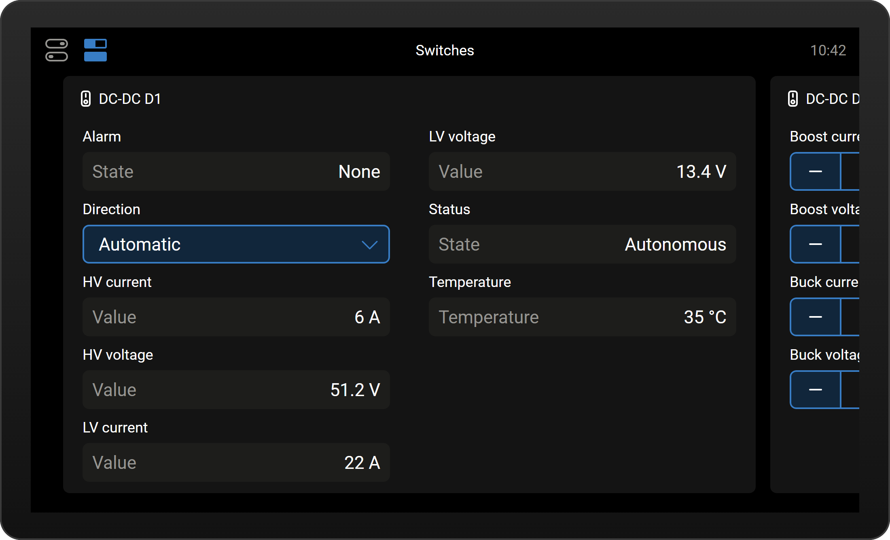
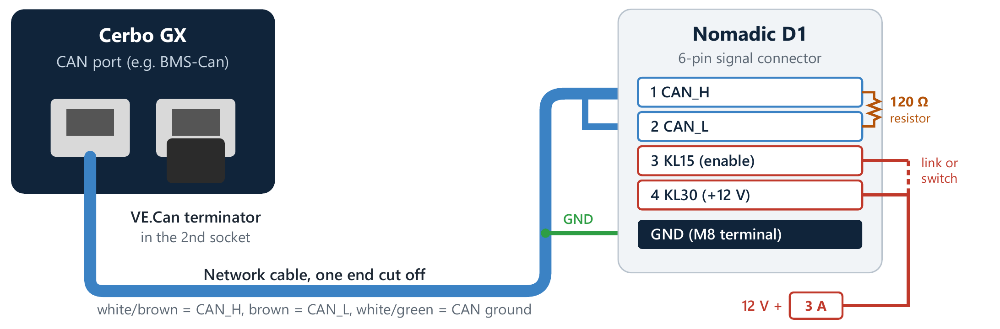
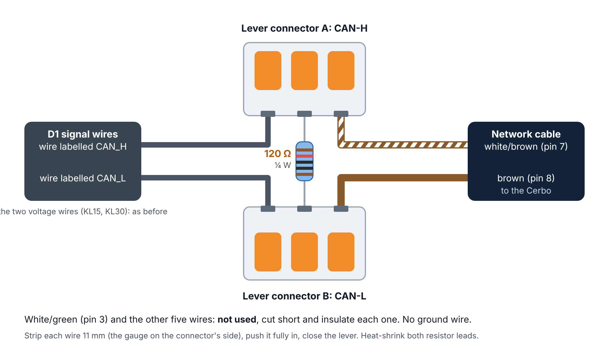
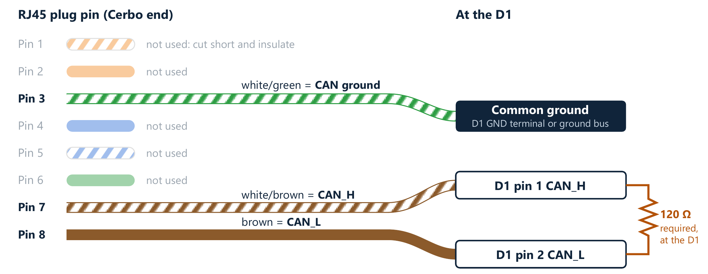
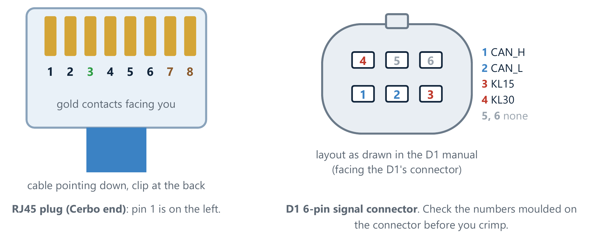
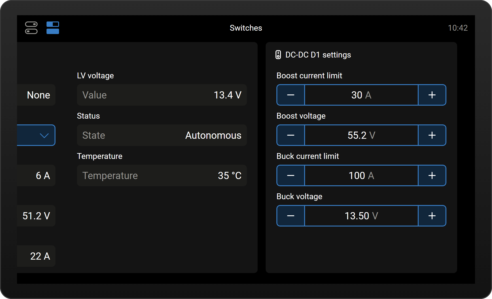
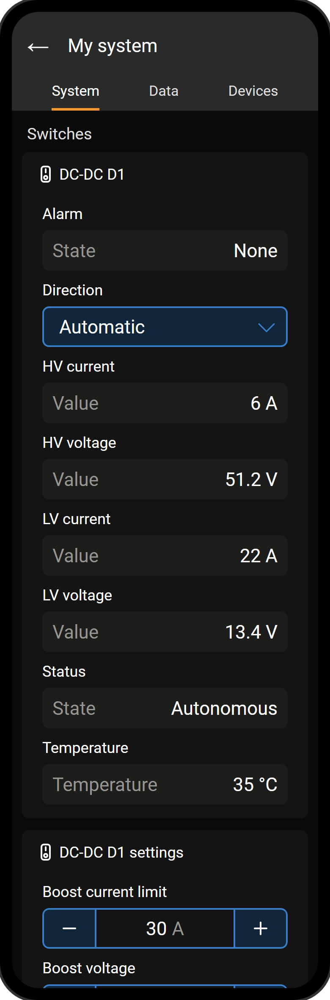
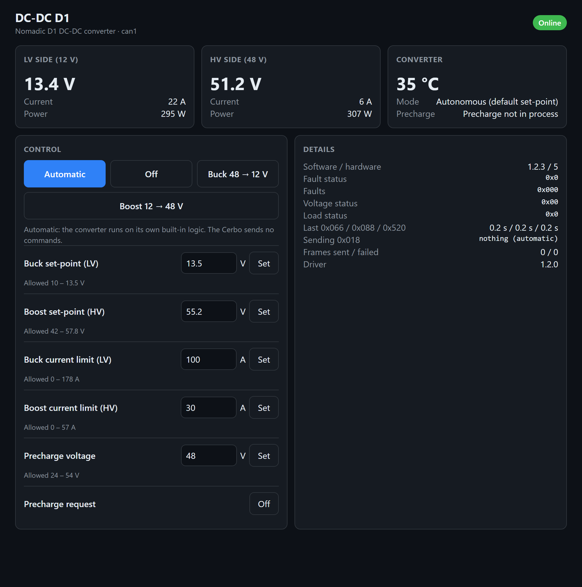

Make the cable, set up the Cerbo, and install the driver. When you're done, the D1's readings and controls appear on the Cerbo screen, in the VRM app and on a web page.
github.com/CKOCI13/cerbo-nomadic-d1-monitor), which never sends the D1 anything.
What you'll see on the Cerbo screen when you're done (drawn from Victron's own screen design, so the real screen may differ slightly).
Gather everything before you start.
The Cerbo uses RJ45 sockets, the same plug as network cables. Take a ready-made network cable, keep the plug on one end for the Cerbo, and cut off the other end. You only need 2 of its 8 wires: the brown pair. The D1 already has labelled wires coming out of its signal plug (CAN_H, CAN_L, and two voltage wires called KL15 and KL30). You join the network cable to its CAN_H and CAN_L wires with two lever wire connectors. The 120 Ω resistor goes between the two connectors. No ground wire is needed.

Blue: the network cable you make. The two lever connectors join it to the D1's CAN_H and CAN_L wires, with the required 120 Ω resistor between them. Red: the D1's own 12 V wires (KL30 and KL15). If your D1 already works today, they're already in place.

Each connector joins three things: one D1 wire, one network-cable wire and one leg of the resistor. The resistor bridges the two connectors, so it sits across CAN_H and CAN_L at the D1.

Pins 7 and 8 are the brown pair (twisted together), which suits CAN well. Everything else, including white/green (pin 3), is not used.

| Wire | RJ45 pin (Cerbo) | Goes to |
|---|---|---|
| white/brown | 7 | Lever connector A, with the D1's wire labelled CAN_H |
| brown | 8 | Lever connector B, with the D1's wire labelled CAN_L |
| 120 Ω resistor | – | One leg in connector A, the other in connector B |
| The other 6 wires (pins 1–6, including white/green) | Not used. Cut them short and insulate each one. No ground wire | |
Sources: Victron's VE.Can to CAN-bus BMS cables manual (Cerbo side: pin 7 CAN-H, pin 8 CAN-L) and the D1 Bidirectional DC-DC Converter Manual, Rev D.
| Wire | Connect to |
|---|---|
| KL30 | A permanent 12 V supply (9–16 V, up to 2 A) through a 3 A fuse close to the 12 V source |
| KL15 | A 12 V "enable" signal (8 V or more = on). Link it to KL30 to keep the D1 always enabled, or wire it through a switch, ignition or relay. The manual (Rev D) fuses it at 1 A when it has its own wire |
| You measure | Meaning |
|---|---|
| About 60 Ω | Correct: both ends are terminated |
| About 120 Ω | The VE.Can terminator isn't in the Cerbo port's other socket, or the cable is in a different port |
| Very high or "OL" | The resistor at the D1 isn't connected, or a wire isn't fully in its lever connector. Re-check steps 2d and 2g |
Do this on the Cerbo's touchscreen, or remotely with Remote Console in VRM. Every item below is found from the Settings menu.
ZZZ.automatic = hands_off in step 5d (the Safe Test Plan does this for its first stages).Cerbo Setup.bat. If Windows shows "Windows protected your PC", click More info and then Run anyway. ===========================================================
Nomadic DC-DC converter - Cerbo GX setup
Cerbo address: 192.168.1.50
===========================================================
1 Edit the settings (config.ini)
2 Find which Cerbo port the converter is on (listen only)
3 Watch live readings from the converter (listen only)
4 Install or update the driver on the Cerbo
5 Show the driver log
U Make a USB-stick installer (no network needed)
9 Try it with a pretend converter (simulation - nothing is sent)
6 Change the Cerbo address
7 Fix "REMOTE HOST IDENTIFICATION HAS CHANGED"
8 Uninstall the driver from the Cerbo
0 Exit
Type a number and press Enter: _
docs/safe-test-plan.pdf).2: find the converter. The helper copies the driver to the Cerbo and listens on every CAN port for 3 seconds. You should see something like this:Venus OS v3.80 OK Listening 3 s on each CAN port (nothing is transmitted)... can0 250 kbit/s error-active nothing from the converter can1 250 kbit/s error-active CONVERTER FOUND (391 frames) The converter is on can1. config.ini has interface = auto, so the driver finds it there by itself. Good.
Port names differ between Cerbo models (can1, or vecan1 on the MK2). That's fine: with interface = auto the driver uses whichever port the D1 is on. If the D1 is set to the other speed, you'll see bus errors instead:
can1 250 kbit/s error-passive nothing decoded, but 288 bus errors: talking at a different speed? Something is talking on can1 at a different speed. On the Cerbo, set that port's CAN-bus profile to "CAN-bus BMS LV (500 kbit/s)" and run this again.
Do what it says (step 3c), then type 2 again. If nothing is heard at all, see Troubleshooting, and check the KL30/KL15 supply first.
1: edit the settings. Notepad opens config.ini. Check these lines, then press Ctrl+S to save and close Notepad:
| Line | What to put |
|---|---|
interface = auto | Leave as auto: the driver finds the D1's CAN port by itself |
startup = auto | Leave as auto: after every Cerbo restart it's in Automatic |
automatic = limited | Leave as limited: in Automatic the Cerbo makes the D1's own buck / boost choices and keeps it within your current limits. (hands_off: Automatic sends nothing) |
boost_voltage = 55.2 | The 48 V target used when you choose Boost. Set it to your 48 V battery's charge voltage |
buck_voltage = 13.5 | The 12 V target used when you choose Buck. 13.5 V charges the chassis batteries properly (it's also the D1's maximum) |
buck_current_limit, boost_current_limit | The output current used for Buck (D1 max 178 A) and Boost (D1 max 57 A). Keep them within your wiring and fuses. Boost is counted on the 48 V side. The 12 V cable then carries up to about 5 times as many amps. For example, 30 A of boost can mean about 154 A on the 12 V cable. See Limiting current in README.md. The maximums are preset for a stock LTV1 (2 AWG, 150 A fuse): 120 A buck, 23 A boost |
..._min / ..._max lines | Safety limits. They're preset to the D1 manual's ranges; tighten them if your batteries, cables or fuses need it |
custom_name = DC-DC D1 | The name shown on the Cerbo and in VRM |
password = | Optional: a password for the web page |
3: watch the live readings (optional, but a good check). The voltages should match what a meter shows on the D1's terminals. To stop, press Ctrl+C, then type N and press Enter.--- can1 10:42:07 ONLINE 0x066=20/s 0x088=100/s 0x520=10/s LV 13.4 V +22 A | HV 51.2 V +6 A | 35 C Mode: Autonomous (default set-point) | Precharge not in process Alarms: none Software 1.2.3 Hardware 5
4: install. After about 10 seconds you should see:/service/dbus-nomadic-dcdc: up (pid 1834) 6 seconds ... INFO: Nomadic DC-DC driver 1.5.0 starting on auto ... INFO: Converter online on can1
Done! It now starts by itself after every reboot and firmware update, in Automatic with limits.
Venus OS can install add-ons from a USB stick or microSD card by itself, with no SSH or password. Do this instead of 5c–5f:
venus-data-nomadic-d1.tar.gz from the latest release (https://github.com/CKOCI13/cerbo-nomadic-d1/releases/latest). It has the standard settings, with interface = auto, so there's nothing to edit. To change settings first, edit config.ini (Cerbo Setup option 1) and type U to make your own copy of the file. On a Mac, download it with Chrome or Firefox: Safari can unpack it into a .tar file, which the Cerbo ignores.venus-data file on the stick. If your browser saved it as venus-data-nomadic-d1 (1).tar.gz, rename it back to venus-data-nomadic-d1.tar.gz: the Cerbo skips names with spaces....tar.gz.installed, so it never installs twice.
Then open the switch pane: the DC-DC D1 cards should be there.Tap the switches icon at the top left of the screen. Two cards appear. Swipe left to see the second one.
DC-DC D1: live readings, the alarm and status, and the Direction dropdown.

DC-DC D1 settings: tap − / + to change a value. It's used whenever the Cerbo is in control (Automatic with limits, Buck or Boost).
| Choice | What happens |
|---|---|
| Automatic (default) | The Cerbo makes the same choice the D1 would make by itself, and sends your current limits with it. It bucks (charges the 12 V side from 48 V, to about 13.4 V) when the 12 V side drops below 12.5 V, as long as the 48 V side is 41–58 V. It boosts (pushes 12 V energy up to 48 V) when the 12 V side is 13.5–16 V, until it falls below 12.3 V. Between 12.5 and 13.5 V it waits in Standby. Each change waits 2 seconds, and boost pauses for a minute after the 12 V side sags. The web page shows what it chose and why. (With automatic = hands_off the Cerbo sends nothing and the D1 decides alone, at its factory limits.) |
| Buck 48V to 12V | The Cerbo makes the D1 charge the 12 V side, at Buck voltage (13.5 V) and up to Buck current limit. In Automatic the Cerbo uses about 13.4 V, the D1's own buck target. |
| Boost 12V to 48V | The Cerbo makes the D1 push energy to the 48 V side, at Boost voltage and up to Boost current limit. |
| Off | The Cerbo tells the D1 not to convert. |
Changing between Buck and Boost always passes through Off for 1 second. Choosing Automatic again lets the Cerbo choose by itself again. The Alarm tile shows the most serious active alarm (red Fault label on a fault), and Status shows what the D1 reports it's doing, or No communication. The precharge controls are hidden because the D1 manual doesn't use precharge. To show them, or to rename or hide any item, go to Settings › Devices › DC-DC D1.
The same cards appear in the Switches widget in the VRM app, and in the Switches panel on the VRM portal dashboard. The Cerbo must be online with VRM. To change values from VRM, do step 3e (VRM Portal access level: Full).
The picture is an illustration. VRM draws its own version of these cards, so the layout may differ a little.
On any phone, tablet or computer on the same network, open:
http://<Cerbo IP>:8088
This page shows everything, including the raw status bits and the exact command being sent. Set a password for it
(password = in step 5d). Without one, anyone on your network can operate the converter.

VRM app, Switches widget (illustration)

The web page.
The Safe Test Plan (docs/safe-test-plan.pdf) has the full careful version. In short: it isn't known yet whether the D1 goes back to
its own logic when the Cerbo stops sending commands, or keeps following the last command. Do this test once, with the 48 V side between 41 and 58 V, and with automatic = hands_off set (option 1, then 4), so that choosing Automatic stops the commands. Set it back to limited afterwards:
| What you see | What to do |
|---|---|
| Option 2: "not heard on any port" | Check, in this order:
|
| "ssh" or "tar" is not recognized | Install the Windows OpenSSH client: Settings › Apps › Optional features › Add a feature › OpenSSH Client. |
| "Connection timed out" or "Connection refused" | Check the IP address (menu option 6), that the PC and Cerbo are on the same network, and that Enable SSH on LAN is on (step 3d). |
| "Permission denied" | Wrong root password. Set it again (step 3d, item 3). |
| "REMOTE HOST IDENTIFICATION HAS CHANGED" | This happens after the Cerbo is reset or replaced. Use menu option 7, then try again. |
| Option 2: Venus OS version warning | Update the Cerbo (step 3a). Older firmware can't show the cards. |
| Nothing appears in the switch pane | Check the firmware is v3.80 or newer. Use option 5 (log) and look for "Registered … on D-Bus". Make sure switch_pane = yes in config.ini. |
| Status shows Standby in Automatic | Normal when the 12 V side is between 12.5 and 13.5 V: the D1 has nothing to do. |
| Buck doesn't start | The D1 only bucks with the 48 V side between 41 and 58 V (D1 manual), even when the Cerbo asks. |
| Status shows No communication | The Cerbo can't hear the D1. Check KL30/KL15, the cable and the termination. |
| The log says "CAN send failed" | Only happens when the Cerbo is sending commands (Automatic with limits, Off, Buck or Boost). Nothing on the bus is acknowledging: same checks as above. The speed is the usual cause. |
| A number won't go higher or lower | It has reached a limit from config.ini. To change the limit: option 1, edit, save, then option 4. |
| VRM shows the cards but won't accept changes | Set VRM Portal access level to Full (step 3e). The Cerbo must be online. |
| The "DC system" figure on the Cerbo looks wrong | The Cerbo counts the D1 as a DC-DC charger. Set service_class = nomadicdcdc in config.ini (option 1, then 4). The D1 leaves the Devices list, but the cards, VRM and web page keep working. |
To change settings later, open Cerbo Setup, choose 1 to edit config.ini, save, then choose 4. The driver restarts with the new settings. Values you change on the screen, in VRM or on the web page are remembered automatically. To remove it, choose 8 and type YES. The D1 carries on in its own automatic mode.